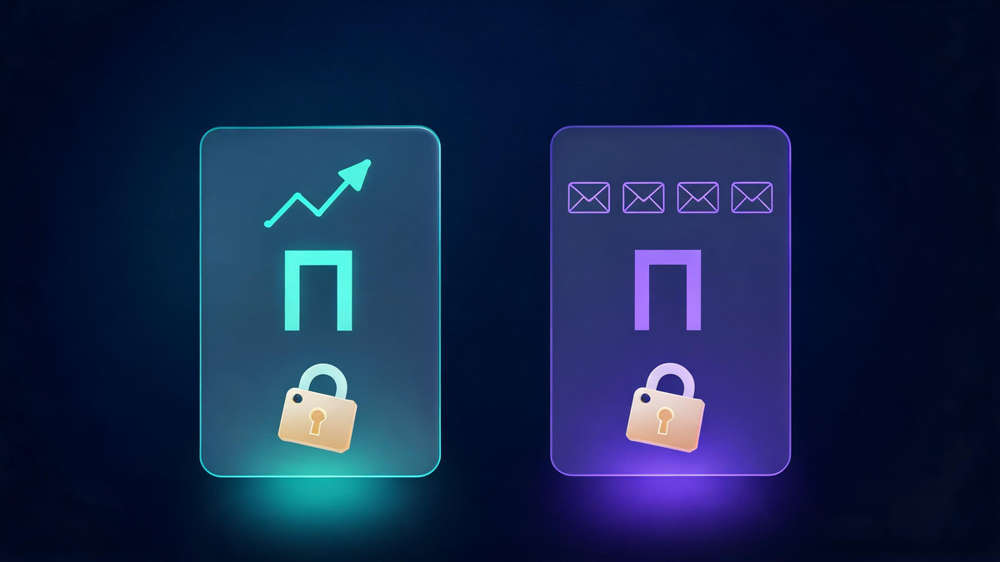
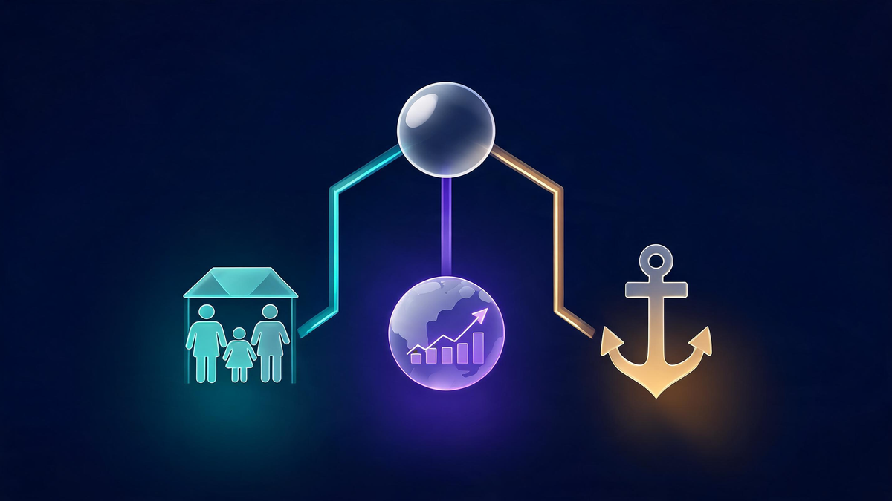

Best Personal Finance Apps: A Comprehensive Comparison Guide

In today's fast-paced digital world, managing your money effectively is more crucial than ever. From tracking daily expenses to planning for long-term goals like retirement, staying on top of your finances can feel overwhelming. Fortunately, a host of personal finance and budgeting apps have emerged to simplify this process, transforming your smartphone into a powerful financial command center. These tools offer a clear, real-time picture of your financial health, helping you build better habits and achieve your goals faster.
The benefits of using a dedicated app for budgeting are significant. They automate the tedious task of tracking every transaction, provide insightful analysis of your spending habits, and offer structured ways to tackle debt or save for a big purchase. A great app for budgeting can be the difference between financial stress and financial freedom. This guide provides a detailed comparison of the top budget apps available, breaking down their key features, costs, and ideal user profiles. We aim to provide an informative and actionable resource to help you find the good money management app that fits your unique needs.
Key Takeaways
- Personal finance apps offer a centralized view of your financial life, linking bank accounts, credit cards, loans, and investments in one place.
- Key features to look for include automatic transaction syncing, customizable budgeting tools, spending trackers, goal setting, and robust security measures like encryption and multi-factor authentication.
- Free apps like Empower Personal Dashboard and Goodbudget offer powerful features for tracking net worth and basic budgeting without a subscription fee.
- Premium apps such as YNAB (You Need A Budget) and Monarch Money provide more advanced, in-depth budgeting methodologies and features for users willing to invest in their financial system.
- Specialized apps are available for specific needs, including shared household budgets, in-depth investment portfolio analysis, and structured debt repayment plans.
- Choosing the right app depends on your financial goals (e.g., debt reduction, investment tracking), budgeting style (hands-on vs. automated), and budget (free vs. paid).
- Reputable budgeting apps are generally safe, using bank-level security and encryption to protect user data. However, users should always practice good digital hygiene, such as using strong, unique passwords.
How We Chose the Top Budgeting Apps
Selecting the right financial tool is a personal decision, and our goal is to provide a clear, unbiased expert review process to guide you. To identify the top budget apps, we employed a comprehensive methodology focused on user value assessment and real-world application. We didn't just look at features on a checklist; we considered how these apps perform in the day-to-day management of personal finances.
Our app selection criteria were built on five key pillars. First, we analyzed User Reviews and Ratings from the Apple App Store and Google Play Store to gauge long-term satisfaction and identify common praise or complaints. Real-world feedback is invaluable. Second, we evaluated the core Feature Set, ensuring the apps offered essential functionalities like bank syncing, budget creation, and spending analysis. Third, we prioritized Ease of Use, recognizing that even the most powerful app is useless if it's not intuitive. A simple budget app experience is critical for long-term adoption. Fourth, we scrutinized Security Measures, giving preference to apps that utilize multi-factor authentication and robust data encryption to protect sensitive financial information. Finally, we assessed Cost and Value, comparing the capabilities of free versions against the benefits of paid subscriptions to determine their overall value proposition.
This rigorous process allowed us to identify a curated list of recommended budget apps that cater to a wide range of financial situations. Whether you're a student learning to budget for the first time, a family managing a household budget, or an investor tracking a complex portfolio, this guide highlights a great app for budgeting suited to your specific needs.
Key Features to Look for in a Money Management App
When searching for the best finance apps, it's essential to understand the core features that deliver the most value. A good money management app goes beyond simple expense logging; it provides a holistic view of your financial life and empowers you to make smarter decisions. Here are the key functionalities to look for.
Automatic Transaction Syncing: The foundation of any modern personal finance app is its ability to securely link to your bank accounts, credit cards, and loan accounts. This eliminates the need for manual entry by automatically importing and categorizing your transactions. Look for apps that use trusted data aggregators like Plaid or Yodlee and ensure they employ bank-level encryption to keep your credentials and data safe.
Budgeting Tools: The heart of a financial budgeting app is its ability to help you create and stick to a budget. The best apps offer flexibility, supporting various methods like the traditional category-based approach, the 50/30/20 rule, or a zero-based budget where every dollar is assigned a job. Customizable categories and real-time tracking of your spending against your budget are crucial for staying on course.
Spending Tracker: A robust spending tracker app provides clear visualizations of where your money is going. Through charts and graphs, you can quickly identify spending trends and pinpoint areas where you can cut back. Many apps also offer alerts to notify you when you're approaching your budget limit in a specific category or if there's unusual account activity.
Goal Setting and Tracking: Whether you're saving for a down payment on a house, planning a vacation, or paying off debt, a great app for budgeting should help you define and track your progress. Features for setting specific savings goals are highly motivating. For those focused on debt, look for tools that help you create and monitor a repayment strategy, such as the debt snowball or avalanche method.
Reporting and Analytics: To get a complete picture of your financial health, you need more than just raw numbers. The best money management apps provide insightful reports and analytics. This can include monthly cash flow summaries, net worth tracking over time, and analysis of your investment portfolio's performance. These reports help you understand the long-term impact of your daily financial habits.
Bill Reminders and Payment Tracking: Late fees are an unnecessary drain on your finances. Many apps help you avoid them by tracking your recurring bills and sending reminders before the due date. This feature ensures you stay on top of your obligations and maintain a positive payment history.
Security and Privacy: Granting an app access to your financial data requires trust. Prioritize apps that offer robust security features, including multi-factor authentication (MFA), biometric login (Face ID or fingerprint), and strong data encryption. Always review the app's privacy policy to understand how your data is used and whether it is sold to third parties.
The Best Free Budgeting Apps
You don't need to spend money to manage your money effectively. Some of the best free budget apps offer powerful features that are more than sufficient for most people's needs. These good free budgeting apps typically make money through referrals for financial products or by offering optional wealth management services, rather than charging for their core tools. While they may have some limitations compared to their premium counterparts—such as fewer customization options or the presence of ads—they provide incredible value for basic finance tracking and are an excellent starting point for anyone who needs a budget app.

Empower Personal Dashboard (Formerly Personal Capital):
Empower Personal Dashboard is widely regarded as the best free app for finance tracking, particularly for those who want to see their entire financial picture, including investments. Its strength lies in its ability to aggregate all your accounts—checking, savings, credit cards, loans, and retirement accounts—to calculate and track your net worth automatically. While its budgeting features are less detailed than some competitors, its powerful investment analysis tools, including a fee analyzer and retirement planner, are unmatched in the free category.
- Pros: Excellent net worth and investment tracking, robust retirement planning tools, fee analyzer can save you thousands, completely free for its dashboard tools.
- Cons: Budgeting tools are less granular than dedicated budgeting apps, may receive calls from their financial advisors for their paid wealth management service.
- Best for: Investors and anyone focused on tracking their net worth and retirement goals.
Goodbudget:
Goodbudget is a great free spending tracker app built around the proven envelope budgeting system. Instead of linking directly to your bank accounts, you manually add your income and allocate it to different digital "envelopes" for your spending categories. As you spend, you record the transactions and deduct them from the appropriate envelope. This hands-on approach promotes mindful spending. The free version offers a limited number of envelopes but is perfect for individuals or couples just starting out.
- Pros: Proven envelope budgeting method encourages discipline, syncs across multiple devices for shared household budgeting, strong free version is very usable.
- Cons: Requires manual transaction entry (no automatic bank syncing), the free plan has limits on the number of envelopes and accounts.
- Best for: Hands-on budgeters, couples or families who want to budget together, and anyone who loves the cash envelope system.
Top Paid & Premium Personal Finance Apps
While free apps are powerful, some users find immense value in upgrading to a paid personal finance management app. Subscribing often unlocks advanced features, a more polished user experience, an ad-free environment, and dedicated customer support. These premium finance apps are designed for users who are serious about taking control of their money and are willing to invest in a system that provides more power, customization, and a specific budgeting philosophy.
YNAB (You Need A Budget):
YNAB is more than just an app; it's a proactive budgeting methodology with a passionate community. It's a top budget app built on a zero-based budgeting system, where you assign every single dollar a "job." This forward-looking approach helps you break the paycheck-to-paycheck cycle and be intentional with your spending. While it has a steeper learning curve than other apps, its effectiveness is widely praised by long-time users for fundamentally changing their relationship with money.
- Pros: Proven zero-based budgeting method, extensive educational resources and live workshops, powerful goal tracking and debt repayment tools, family sharing for up to six people.
- Cons: Subscription cost is one of the highest in the market, the learning curve can be steep for beginners, does not include investment tracking features.
- Best for: Disciplined budgeters who want a hands-on system to gain total control over their finances.
- Pricing: YNAB costs $14.99 per month or $109 per year. A 34-day free trial is available.
Monarch Money:
Monarch Money has quickly become a top contender for the best money management app, especially for those looking for a modern, all-in-one solution. It combines automatic syncing, customizable budgeting, investment tracking, and financial goal planning into a clean, intuitive interface. It's particularly strong for couples and families, allowing users to invite a partner to share their financial dashboard with customizable levels of access. Because it's a subscription-based app, it does not sell user data or show ads.
- Pros: Comprehensive all-in-one financial dashboard, robust investment tracking and net worth reporting, excellent collaboration features for couples, clean and ad-free interface.
- Cons: Subscription cost may be a barrier for some, newer than some competitors.
- Best for: Individuals, couples, and investors looking for a comprehensive and modern replacement for apps like Mint.
- Pricing: Monarch Money costs $14.99 per month or $99.99 per year. A 7-day free trial is available.
Specialized Apps for Specific Needs
While many apps aim to be an all-in-one solution, some excel by focusing on a specific financial need. Whether you're managing a household budget app with a partner, tracking a complex investment portfolio, or aggressively paying down debt, there's a specialized app designed to help you succeed.

Best for Family and Household Budgeting: Monarch Money
Managing finances with a partner presents unique challenges, from coordinating bill payments to saving for shared goals. Monarch Money is exceptionally well-suited as an app for family budget management. Its standout feature is the ability to invite a partner to a shared financial dashboard, providing a single source of truth for the household's finances. You can sync all individual and joint accounts and track progress toward shared goals, like saving for a vacation or a down payment. This transparency and collaboration make it one of the best apps for a family budget.
- Pros: Shared dashboard for couples, customizable access levels, tracks shared financial goals, combines budgeting and investment tracking for a complete household view.
- Cons: Requires a paid subscription after the free trial.
Best for Investment Tracking and Portfolio Management: Empower Personal Dashboard
For those whose primary goal is to monitor and analyze their investments, Empower Personal Dashboard remains the undisputed leader. While it functions as a general personal finance app, its true power lies in its sophisticated investment tracking tools. It aggregates all your retirement and brokerage accounts, analyzes your overall asset allocation, and even uncovers hidden fees in your mutual funds and 401(k)s. This makes it the best app for finance tracking from a portfolio perspective, giving you a clear view of your path to retirement.
- Pros: Comprehensive portfolio analysis, retirement planner simulates future outcomes, investment fee analyzer, excellent net worth tracking, core tools are free.
- Cons: Budgeting features are less robust than dedicated budget apps.
Best for Debt Management and Repayment: YNAB (You Need A Budget)
Getting out of debt requires focus and a clear plan. YNAB is an excellent app for debt management because its entire philosophy is built around intentional spending and planning. The zero-based budgeting method forces you to prioritize where your money goes, making it easier to allocate extra funds toward debt. YNAB has built-in tools for creating debt repayment plans, allowing you to experiment with different strategies (like the debt snowball or avalanche method) and see how extra payments can accelerate your journey to becoming debt-free.
- Pros: Proactive budgeting method helps find money for debt repayment, dedicated goal-setting for debt accounts, highly motivating progress tracking.
- Cons: Requires a paid subscription and a commitment to its hands-on methodology.
Comprehensive Comparison: Features at a Glance
Choosing between the various financial budgeting apps can be challenging. To simplify your decision, this comparison table provides a side-by-side look at the key features of the top apps discussed in this guide. Use this budget app matrix to quickly assess which app aligns best with your needs, from pricing and budgeting methods to customer support and overall user ratings.
| Feature | Empower | Goodbudget | YNAB | Monarch Money |
|---|---|---|---|---|
| Pricing Model | Free (Paid Wealth Management available) | Freemium ($10/month or $80/year for Plus) | Subscription ($14.99/month or $109/year) | Subscription ($14.99/month or $99.99/year) |
| Bank Syncing | Yes, Automatic | No, Manual Entry | Yes, Automatic | Yes, Automatic |
| Budgeting Method | Traditional Categories | Envelope System | Zero-Based Budgeting | Custom, 50/30/20, Rollover |
| Investment Tracking | Yes, Advanced | No | No | Yes, Detailed |
| Debt Tracking | Yes (via Liabilities) | Yes (via Envelopes) | Yes, Advanced Tools | Yes (via Goals) |
| Goal Setting | Yes (Retirement Focus) | Yes (Savings Goals) | Yes, Highly Customizable | Yes, Highly Customizable |
| Learning Curve | Easy | Moderate | Steep | Easy to Moderate |
| Customer Support | Email, Phone (for advisory clients) | Email, Community | Email, Chat, Live Workshops | Email, Chat |
| Overall Rating (App Store) | 4.7/5 | 4.7/5 | 4.8/5 | 4.8/5 |
Choosing the Right Personal Finance App for Your Needs
With so many options available, selecting the perfect personal finance app can feel like a significant decision. The key is to match the app's features and philosophy to your own financial goals and personality. By asking yourself a few simple questions, you can narrow down the choices and find the easiest budget app for you to adopt and stick with long-term.
Consider Your Financial Goals: What is the primary reason you need a budget app? If your main focus is on tracking your investment portfolio and planning for retirement, an app like Empower Personal Dashboard is a natural fit. If you're laser-focused on getting out of debt and changing your spending habits, the structured methodology of YNAB might be the most effective tool. For general-purpose spending tracking and saving for goals, a versatile app like Monarch Money could be ideal.
Assess Your Budgeting Style: Are you someone who prefers a hands-on, meticulous approach, or do you want technology to do most of the work for you? If you enjoy the process of manually categorizing expenses and using a specific method like the envelope system, Goodbudget is an excellent choice. If you prefer automated tracking where transactions are imported and categorized for you, apps with bank syncing like Monarch Money or Empower are better suited to your style.
Evaluate Your Comfort with Technology: Some apps are designed to be a simple budget app from the moment you open them, with intuitive interfaces and clear navigation. Others, while more powerful, may have a steeper learning curve. If you want a straightforward, plug-and-play experience, look for an app praised for its user-friendly design. If you're willing to invest some time to learn a more complex but potentially more rewarding system, don't shy away from a more robust platform.
Determine Your Budget: Are you committed to finding a free budget tracking app, or are you willing to pay a subscription for premium features? There are fantastic free options that can serve many people's needs perfectly. However, if you find value in an ad-free experience, advanced features, or a specific methodology, a paid app can be a worthwhile investment in your financial future.
Prioritize Security and Privacy: Before committing to any app, ensure it meets your standards for data protection. Look for features like multi-factor authentication and a clear privacy policy that explains how your data is handled. Your financial security is paramount.
Final Recommendations:
- For Beginners: Start with Goodbudget. Its manual, envelope-based system is a fantastic way to learn the fundamentals of budgeting and mindful spending without the complexity of other apps.
- For Advanced Users/Investors: Choose Monarch Money for a powerful, all-in-one dashboard that combines detailed budgeting with robust investment and net worth tracking.
- For Families: We recommend Monarch Money for its excellent collaborative features that allow partners to share a financial overview and work towards common goals together.
Frequently Asked Questions About Budgeting and Finance Apps
What is the best free budgeting app?
The best free budgeting app depends on your needs. For overall financial tracking, including investments and net worth, Empower Personal Dashboard is a top choice. For those who prefer the hands-on envelope budgeting method to control spending, Goodbudget is an excellent free option.
Are personal finance apps safe to use?
Reputable personal finance apps are generally safe and use high-level security measures to protect your information. They typically employ bank-level encryption, multi-factor authentication, and secure connections through data aggregators like Plaid. However, it's crucial to choose well-known, reputable apps and practice good security habits, like using a strong, unique password and avoiding access on public Wi-Fi.
How do personal finance apps make money?
Personal finance apps have several revenue models. Paid apps like YNAB and Monarch Money make money directly from user subscription fees. Free apps often generate revenue by recommending financial products (like credit cards or personal loans) and receiving a referral fee, showing ads, or using their free tools as a lead generator for paid wealth management services, as is the case with Empower.
Can I link all my bank accounts to a budgeting app?
Most major budgeting apps can connect to thousands of banks and financial institutions, including checking and savings accounts, credit cards, student loans, mortgages, and investment accounts. While they have broad compatibility, you may occasionally find a smaller local bank or credit union that isn't supported. It's always a good idea to check if your specific institutions are supported before fully committing to an app.
How often should I check my budgeting app?
Consistency is key. For best results, it's helpful to check your budgeting app at least a few times a week. This allows you to categorize recent transactions, check your progress against your budget, and catch any potential overspending before it becomes a major issue. Some people prefer a quick daily check-in, while others find a more in-depth review once a week is sufficient.
What's the difference between a budget app and a spending tracker?
While the terms are often used interchangeably, there's a subtle difference. A spending tracker primarily focuses on recording and categorizing your past expenses to show you where your money went. A budgeting app does this as well but adds a forward-looking component: it helps you create a plan for your money before you spend it. Most comprehensive personal finance apps today combine both functionalities, allowing you to track your spending against your pre-defined budget.